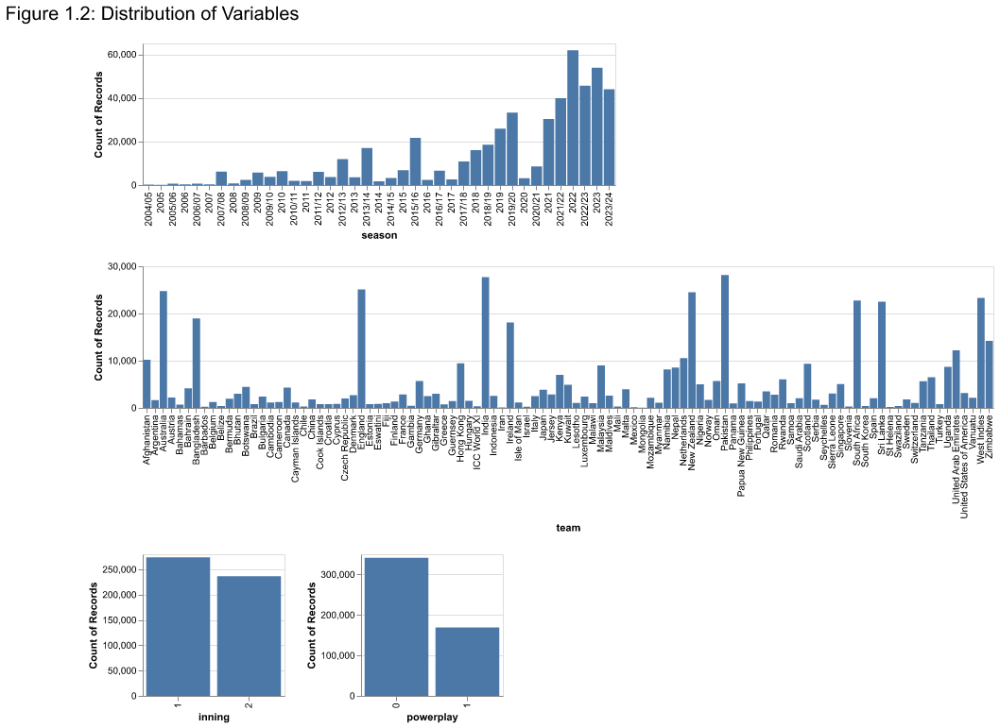
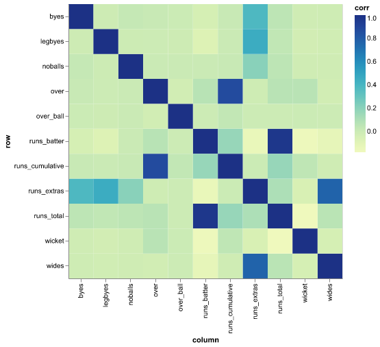
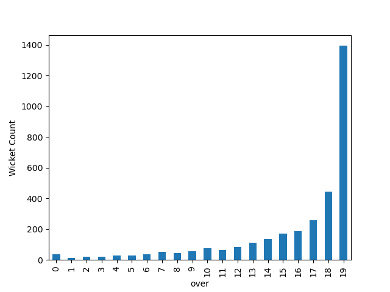
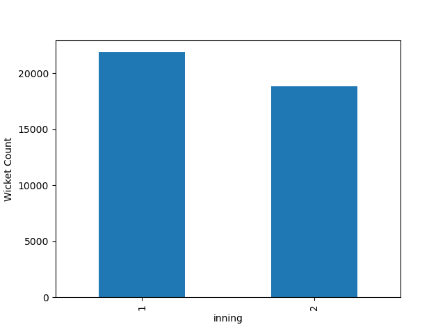
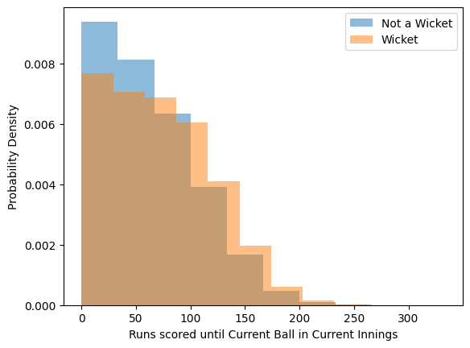

| non_striker | count | |
|---|---|---|
| 0 | Babar Azam | 3074 |
| 1 | BL Mooney | 2483 |
| 2 | Mohammad Rizwan | 2389 |
| 3 | S Mandhana | 2088 |
| 4 | SW Bates | 1928 |
| 3799 | A Dutt | 1 |
| 3800 | N Nankov | 1 |
| 3801 | N Ndouteng | 1 |
| 3802 | Maaha Naseer | 1 |
| 3803 | GDR Eranga | 1 |
DSCI 310 Group 11 Project: Predicting Probability of Wicket on a Delivery in Cricket
Abstract
Our project aims to predict the probability of a wicket on a delivery in Cricket. We will look at ball-by-ball factors that could potentially affect this probability and see how the wicket probability changes with game conditions. Forecasting methods for cricket use complex regression models as discussed by Asif and McHale (2016), which is why we decided against predicting win probability, a common prediction model used for sports.
Introduction
Cricket is a bat and ball sport involving two teams of eleven players each. Originating in the 16th century, Cricket today is commonly played in three formats: Tests, One Day Internationals and T20 Internationals. Our analysis will be specifically focusing on T20 International games and looking at the conditions of those games to analyze our prediction probability. In a T20 game, one team will bat first and set a target number of runs in 20 overs or until 10 wickets are lost. The other team will bat second, and to win the game, they must exceed the target set by the second team in 20 overs or less. Each of the 11 players in the team will need to bat as more wickets are lost, but some bat more often than others, given all wickets are not always lost. Only some players are bowlers. There are multiple different ways of getting a wicket, and these can be affected by the following factors:
- Bowler: The skill of a bowler can affect the probability
- Batter: Similarly, the skill of a batter can affect the probability
- Inning: Determines which team is batting and bowling
- Over: An over consists of 6 deliveries thrown by the bowler from one end of the pitch to the batter on the other end. The over can determine how much risk a batter is willing to take with his next ball.
- Ball in the over: The specific delivery in the over. Batters are more likely to take risks towards the end of an over compared to the beginning.
- Runs scored till now: Looks at the amount of runs scored in the inning up until the current ball. Fewer runs scored may mean the batter is more likely to take risks in order to get more.
- Powerplay: A powerplay is when there are fielding restrictions placed on the bowling team, making it harder for them to get a wicket.
We will be looking at the above factors along with some others to judge what factors may be best for our model in the Exploratory Data Analysis section. We will be reading our data in json files from the Cricsheet website, and converting it to our desired .parquet format using the scripts in the loading_parsing_functions.py file which can be found in the src folder.
Methods
Firstly, we will perform some exploratory data analysis on the training data to get a better understanding of the dataset and what relationships there are with our target variable.
Exploratory Data Analysis
The dataset contains 28 columns and 510652 observations related to cricket. The ratio of quantitative to categorical (ordinal and nominal) data is approximately 50:50. Note that the columns player_out, player_out_id, fielder_name, fielders_id, and wicket_type show a significant amount of missing values. Player_out and player_out_id may be missing due to inapplicability (e.g., no one is out), which results in fielder_name, fielder_id, and wicket_type being invalid in these observations. Thus, these missing data are likely classified as missing at random(MAR). Given the complexity of imputing these values, they are unlikely to be included in our further analysis.
Note that, among the 28 columns, there were few attributes generated based on existing columns, and they are “over_ball”, “inning”, “runs_cumulative”, and “powerplay”. Although they are all integers, it is important to note that, only “overball” and “runs_cumulative” are quantitative, whereas “inning” and “powerplay” are categorical. Detailed calculations of these attributes are in the loading_parsing_functions.py file in the src folder.
** Distribution of Variables**


Caption: Figure 1 and Figure 2 bar chart illustrates the distribution of all the variables. Note that the analysis excludes all columns related to ID as they are primarily for identification purposes and are unlikely to show significant patterns. It is observed that none of the quantitative attributes follow a normal distribution; most are right-skewed distributions. An interesting finding is noted in the attributes over in Figure 1, where the frequency steadily decreases with increasing values, suggesting further analysis. Concerning ordinal attributes, we have a significantly higher amount of data from seasons that happened in recent years than in the past.
In terms of team in Figure 2, there appear to be more teams from “New Zealand,” “South Africa,” “India,” “West India,” “Pakistan,” “Bangladesh,” “Sri Lanka” “Australia,” and “England” than teams from other countries/regions.
The attribute inning in Figure 2 doesn’t seem to have a significant difference across the two conditions, however, for powerplay, the number of occurrences in condition “0” is approximately twice as high as in condition “1.”
| batter | count | |
|---|---|---|
| 0 | Babar Azam | 2932 |
| 1 | Mohammad Rizwan | 2295 |
| 2 | BL Mooney | 2094 |
| 3 | PR Stirling | 1974 |
| 4 | S Mandhana | 1958 |
| 3898 | K Loday | 1 |
| 3899 | S Sandeepani | 1 |
| 3900 | R Mahajan | 1 |
| 3901 | Noorullah Sidiqi | 1 |
| 3902 | Ahmadi Ravat | 1 |
| bowler | count | |
|---|---|---|
| 0 | IS Sodhi | 2139 |
| 1 | Shadab Khan | 1982 |
| 2 | TG Southee | 1956 |
| 3 | MJ Santner | 1930 |
| 4 | DB Sharma | 1923 |
| 2820 | KH Prajapati | 2 |
| 2821 | Talha Khan | 1 |
| 2822 | Saif Hassan | 1 |
| 2823 | E Ul Haq | 1 |
| 2824 | J Grzinic | 1 |
Lastly, regarding nominal attributes, we are seeing an uneven distribution appearance of players(batter, bowler, and non-striker) in this dataset, by using non-striker as an example, some players such as V Kohli appear around 2100 times in this dataset according to Table 1, where other players such as F Bangur only appeared once. Due to such a large number of batters(Table 2) and bowlers(Table 3) in the dataset, we will not be using it in our analysis. To use these attributes, we will also need to create summary statistics for each batters and bowlers, as explained by Dinsdale (2023) which is out of the scope of our project.
In general, none of the attributes in our dataset form a normal distribution, with samples unevenly distributed across categorical attributes. It is important to remember this when training, testing, and interpreting the model, and to appropriately acknowledge this as a potential limitation.
Multivariate Analysis - Correlation Analysis

Among the quantitative attributes in Figure 3, 5 pairs of relationship are above the threshold of weak correlation(|r| > 0.3), and they are:
- batter_total & run_total(r = 0.97)
- over & runs_cumulative(r = 0.87)
- wides & runs_extras(r = 0.76)
- legbyes & runs_extras(r = 0.46)
- byes & runs_extra(r = 0.38)
Note that, using Pearson’s r might not be able to capture non-linear relationships that potentially exist among these relationships.
| count | ||
|---|---|---|
| powerplay | wicket | |
| 0 | 0 | 323986 |
| 1 | 20878 | |
| 1 | 0 | 165011 |
| 1 | 7580 |
We can see that there is a much higher proportion of wickets during the powerplay (approximately 31% are wickets compared to only around 6% in non-powerplay conditions) in Table 4. This could be attributed to players taking more risks since there are more fielding restrictions in the powerplay (Bhattacharjee et al. 2016). While most of the game is in the powerplay, and there is a class imbalance, this suggests that the powerplay does affect the chances of a wicket.

Similarly, the distribution from Figure 4 above shows us that towards the end of the game, there are significantly less wickets than in the first few overs, which suggests that the variable Over could be used for our model as well.

The above plot Figure 5 indicates that there are significantly more wickets in the first innings than the second. This could be attributed to the fact that in the second innings, batters are more likely to come in with a plan as they have a target in mind to chase and they are less likely to take risks. It is also possible that the number of wickets in the second innings is lower since the teams may not play the full second innings if they reach the target before that. So, this is a variable we will take into consideration when building our model.

From the Figure 6, there does not seem to be too much of a relationship between the runs scored so far and whether there is a wicket or not, except when the runs are greater than 100. At this point, it is more likely to be a wicket.
Model Building
Next, we will use the relationships we found above to build our model. The variables we will be looking at are inning, over, powerplay, over_ball and runs_cumulative. We will perform preprocessing on our datasets using one-hot encoding on our categorical variables. While there is only one numerical variable, we will still create a scaler in case we look to add other variables later in our analysis.
We are going to create a Logistic Regression Model for this analysis. We decided against K-NN classification as there is class imbalance and even if we balance our classes by oversampling, our accuracy will decrease using a nearest neighbours methodology. Our data is also extremely large (700000 observations) and fitting and training the K-NN model would be complex and time-consuming for this use-case. We will be using a pipeline to fit our data.
Discussion
Summary of Results
- Explorational Data Analysis: The exploration revealed several key insights that influence model building and interpretation. For example, the analysis shows the vast difference in player occurrences.
- Model Building and Selection: Based on the EDA findings, five features: Inning, over, powerplay, over_ball, and runs_cumulative were chosen based on the statistical relationships.One-hot encoding was applied for categorical variables to avoid introducing bias during model training.Finally, Logistic Regression was made due to the binary nature of the target variable (wicket or no wicket).Considering the potential drawbacks of class imbalance, the K-Nearest Neighbors (KNN) is not recommended.
Unexpected Findings
- Non-normality: The extent of non-normality data across various features is unexpected. This highlights the importance of data exploration before model building.
- Seasonal effect: The temporal bias towards recent seasons might not be anticipated, requiring adjustments to ensure generalizability.
Impact of Findings
These findings have several potential impacts:
- Model development: Understanding the distribution patterns and biases is crucial for choosing appropriate modeling techniques, interpreting outcomes, and guiding future data collection efforts.
- Generalizability: Addressing non-normality and temporal bias is essential for creating models that perform well on data beyond the training set.
- Player analysis: Exploring model results can unlock valuable insights into individual player performance and interaction with other factors influencing wicket probability.
- Cricket analytics: The model’s insights can inform cricket analysts and fans about factors that influence wicket probabilities, leading to better predictions and understanding of the game.
Future Questions and Work
These findings lead to several compelling questions for future research:
Addressing non-normality: How can we effectively transform the data (e.g., log transformation)or utilize specific algorithms to improve model performance in the presence of non-normal distributions?
Mitigating temporal bias: What data augmentation techniques or alternative approaches can be used to ensure the model generalizes well across different time periods? Mitigating this bias are necessary for broader applicability.
And the future work includes:
Feature engineering: Explore creating additional features or transformations of existing ones to capture more aspects of the game and potentially improve model performance.
Extra information: Marshall, Runswick, and Broadbent (2024) also discuss how pitch conditions could affect the possibility of a wicket. Having this data would help improve our model significantly.
Model performance evaluation: Evaluate model perform on test data using appropriate classification performance metrics (e.g., F1-score, ROC AUC) and compare it with other potential models to identify the best approach for the task.
By addressing these questions, future research can build upon the current findings and develop even more robust and insightful models for predicting wicket probabilities in T20 cricket.
References
Asif, Muhammad, and Ian G McHale. 2016. “In-Play Forecasting of Win Probability in One-Day International Cricket: A Dynamic Logistic Regression Model.” International Journal of Forecasting 32 (1): 34–43. https://doi.org/10.1016/j.ijforecast.2015.02.005.
Bhattacharjee, Debabrata, Monami Pandey, Himangshu Saikia, and Uday Kumar Radhakrishnan. 2016. “Impact of Power Play Overs on the Outcome of Twenty20 Cricket Match.” Annals of Applied Sports Science 4 (1): 39–47. https://doi.org/10.7508/aass.2016.01.007.
Dinsdale, David. 2023. “Explaining Next Ball Probability in Cricket.” 2023. https://theanalyst.com/na/2022/10/opta-next-ball-predictor/.
Marshall, Thomas, Oliver R Runswick, and David P Broadbent. 2024. “‘What We Talk about Is Creating a Probability’: Exploring the Interaction Between the Anticipation and Decision-Making Processes of Professional Bowlers and Batters in Twenty20 Cricket.” Psychology of Sport and Exercise 70: 102543. https://doi.org/10.1016/j.psychsport.2023.102543.